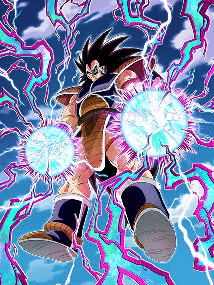
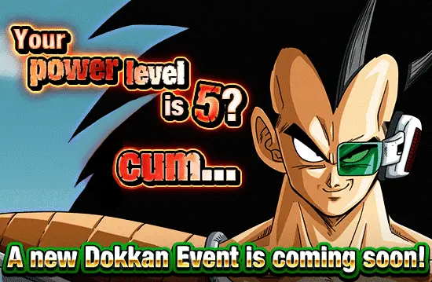
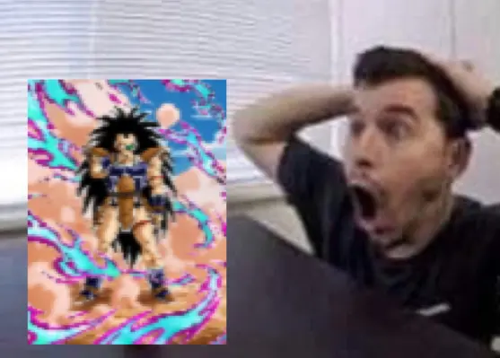
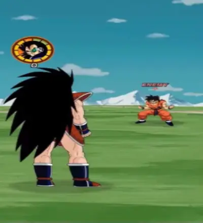
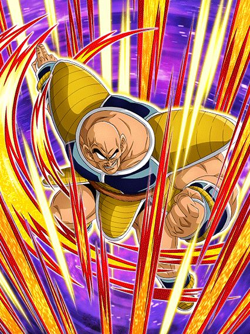
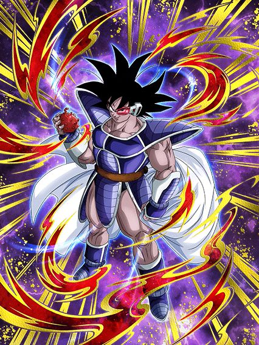
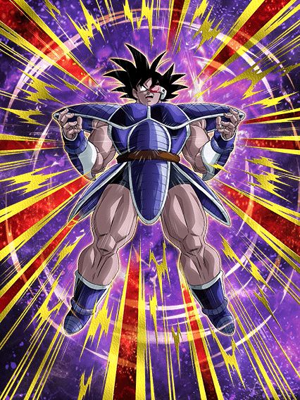
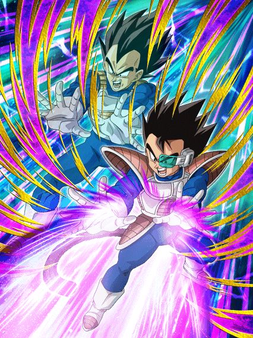
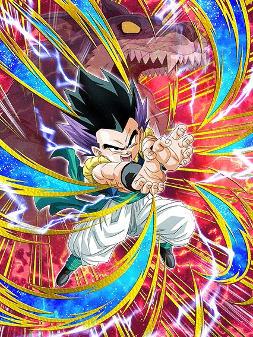
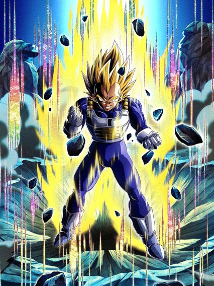

É esse o tal do aniversário?
Pessoalmente eu acho um completo desrespeito que a celebração mais importante da história do dokkan seja entre o aniversário e a celebração de downloads, como ousam profanar tamanha desconsideração com o card que finalmente superou o Gogeta STR?

É ele, o rei das letras minúsculas.
GRANDIOSO RADITZ, o homem, o mito, a lenda
Eu sei que nem preciso falar desse cara pq todo mundo já conhece o melhor card do jogo, mas vamo lá né
Pra começo de conversa, o raditz é um card que foi lançado, e isso aconteceu em 2022 ein, fica ligado
Agora por favor segure suas lágrimas, eu sei q vc já se emocionou, mas eu irei descrever detalhadamente tudo que o raditz tem

O [Unveiling of Power] raditz phy tem: Um nome, uma cor, uma classe (que é extreme, assustador), tem uma arte, tem efeitos na arte, um sticker na arte, um título SÓ DELE ein, e isso é o começo..
Sei que é demais já, mas ele tmb tem: Uma passiva, um super attack, links, categorias, uma leader skill, e vc acha que acabou? Não kkkkkkk, ESSE CARA, tem uma incrível active skill, oq mais vc poderia pedir de um card????
Pensa, o raditz só não tem uma intro, pq sabiam que seria demais e nossas mentes não conseguiriam compreender tamanha grandiosidade.

Sobre a sua habilidade passiva "Raditz's Enforcement", o [Unveiling of Power] raditz phy tem 150% de ATK e DEF, o que não faz sentido já que infinito multiplicado por qualquer coisa é infinito
Ele também faz algo novo: ele aumenta seu ATK e DEF novamente simplesmente fazendo um super attack!! Onde mais vc vai achar um card com buffs tão fáceis?? Por sinal esse buff só é ativado se tiver 1 inimigo, até pq todos os outros tremeriam de medo dele e quitariam da partida
Pra ter uma passiva ainda mais completa, o [Unveiling of Power] raditz phy dá crítico garantido se ele tomar um golpe, só pra humilhar o oponente por tentar encostar nele
E pra finalizar, ele ainda ganha um esplêndido, incrível, fantástico KI+2 quando matar um inimigo, que sempre acontece já q ele respira e todo mundo morre né

O [Unveiling of Power] raditz phy tem um super attack que ataca todos os inimigos de uma vez.
"Mas ele não só ganha buffs se estiver contra um inimigo apenas?", irão sempre fazer essa pergunta, ignore, o [Unveiling of Power] raditz phy não precisa disso.
Caso algum inimigo ouse te atacar 3 vezes, você pode usar a insana active skill que dá 2050 radilhões de dano em tudo, simplesmente quebrado
Já se tornou claro que o [Unveiling of Power] raditz phy é certamente, indubitavelmente, incontestavelmente, sem nenhuma sombra de dúvidas, um card que foi lançado.
"Preciso falar mais sobre esse personagem? Meu mano é simplesmente perfeito em todos os aspectos, ele é ótimo líder para qualquer categoria, as diferentes passivas dele são úteis em qualquer evento, seja fácil ao mais difícil, ele arrebenta em qualquer evento, é simples assim, o Zamasu sente medo dele, sem falar no dano dele que é absurdo, a cada crítico é um hit kill diferente, Dokkan nunca vai superar esse personagem."
- By Teagores
"O Raditz phy (Irmão de Goku) (filho de Bardock) (filho da mãe do Goku) (tio de Gohan) é um personagem incrível afinal ele é o único personagem que não tem dano e nem defesa e eu achei isso muito criativo realmente a akatsuki se superou para fazer esse personagem, então O Raditz phy (Irmão de Goku) (filho de Bardock)(filho da mãe do Goku) (tio de Gohan) é sim um personagem."
- By Dollyinho
"Raditz phy é um personagem que obviamente faz parte da família do Goku. E olha que bacana, ele tem ataque em área, que faz ele ser usável num World Tournament."
- By Auã
Agradeço as participações especiais, o raditz merece.

Ih alá lançaram 2 dokkan fests juntos sem quere-
Nappa STR, o card secundário que eu irei discretamente proclamar o card secundário que é melhor q o principal
Esse cara é um tank suporte interessante, ele por algum motivo tem 780% de DEF, oq parece muito, mas não é por causa dos stats dele
Ele dá os básicos 30% de ATK e DEF pra Saiyan Saga (acho q ele é o primeiro suporte da incrível categoriakkk) e tem um dano bem medíocre que aumenta um pouco se estiver enfrentando um inimigo apenas
O legal desse cara é ele ter uma active skill onde ele planta um saibaiman que debuffa legal o inimigo, apesar de ter uma condição muito horrível de levar 6 ataques pra usar
Felizmente essa active tmb pode ser usada se tiverem 3 inimigos ou mais, então é, útil em super batte roads, não poderia se esperar mais de um saiyajin que veio no banner do nosso salvador [Unveiling of Power] raditz phy

Um raríssimo suporte pra extreme class.
Esse cara é super simples, ele não tem o melhor dano ou melhor defesa nem nada, só um suporte muito bom pra qualquer vilão do jogo, 3 de KI, 40% de ATK e se tiver um inimigo super class ele dá 40% de DEF também
Lógico, a defesa dele ser meio medíocre atrapalha ele mas como o trabalho dele é ser um suporte, é justo
Ele tem uma transformação temporária com uma condição horrível de ter 30% de chance de se transformar caso esteja abaixo de 80% de HP, sem comentários do quão horrível isso é.

Ele perde o suporte e vira um personagem mid.
Ele fica assim só por 3 turnos, é, mas pô mais dano e defesa em troca do suporte.. não sei não
Acho q o legal é ele curar 20% de HP quando se transforma, isso é maneiro pelo menos
Ele tmb stacka 20% de ATK e DEF nos supers dessa forma, não sei pq, não ajuda demais não mas tá ali né

Acho q esse é o único card com 40% de chance de desvio do jogo inteiro.
Um orb changer e suporte pra Siblings Bond, achei maneiro tá? É uma opção boa pra um timezinho de Vegeta Family
Mas é, tirando esse desvio aí, o dano e defesa desse rapaz são baixos, cuidado.

Certamente é um F2P.
O super dele tem uma animação legal e tals mass.. é complicado viu
A gente já tá num ponto onde personagens F2P não tem como competir com os cards de summon em questão de dano, é por isso q cards F2P que dão dano e nada mais não ajudam
Esse cara por exemplo, só tem um monte de ATK e DEF e 30% de chance de lançar um adicional, cabou a passiva
Sei lá, eles tem q dar uma repensada nos cards F2P pq cards como esse tem praticamente zero utilidade

Como eu amo juntar 777 medalhas pra um personagem mid.
Esse cara lança 2 adicionais com 10% DE CHANCE DE SEREM SUPERS, nada a declarar.
A defesa dele até pode ser decente pós super, mas é, esse cara infelizmente não ajuda muito a categoria não, triste, pq eu amo a arte dele
Você chegou ao fim dessa página!
Obrigado por ler tudo, e fica a vontade pra ver outras